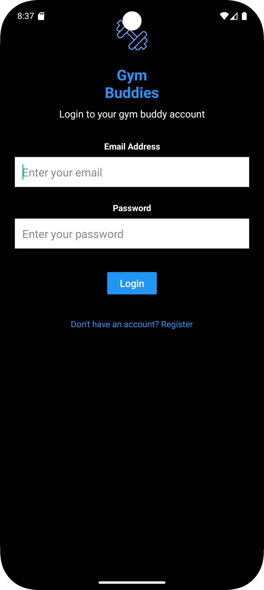
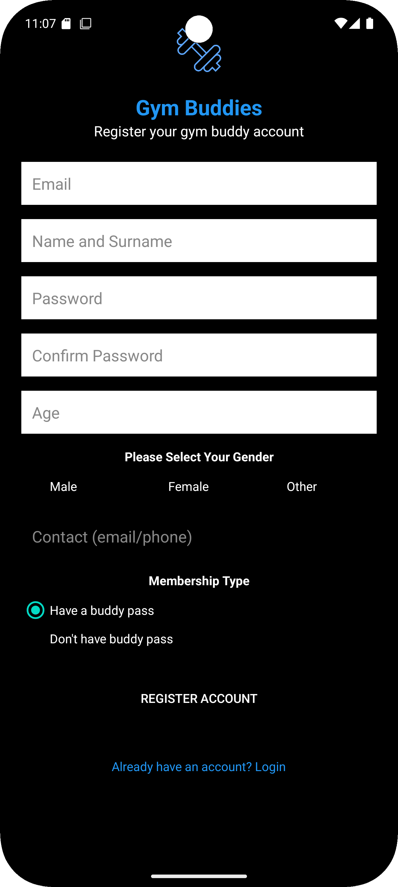
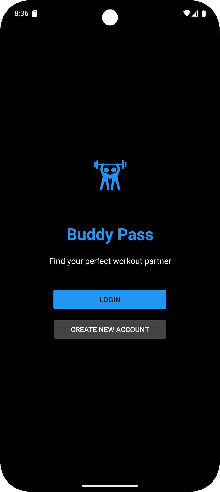
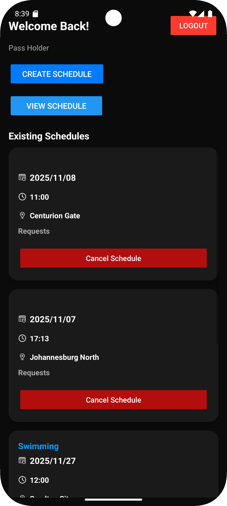
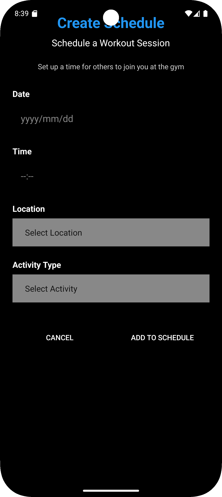
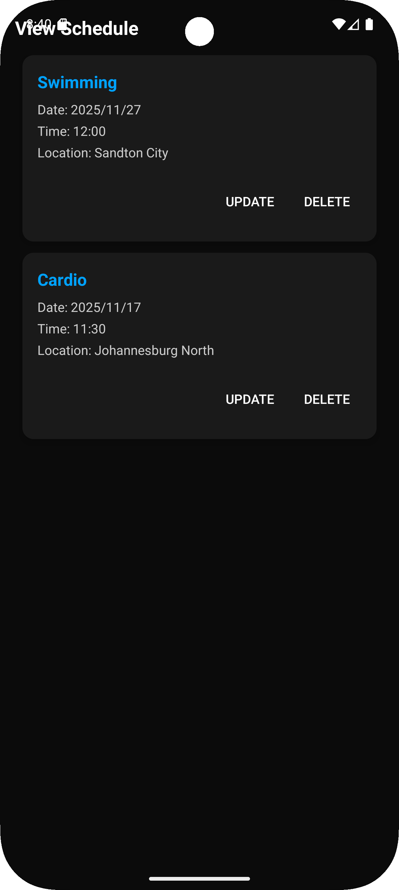
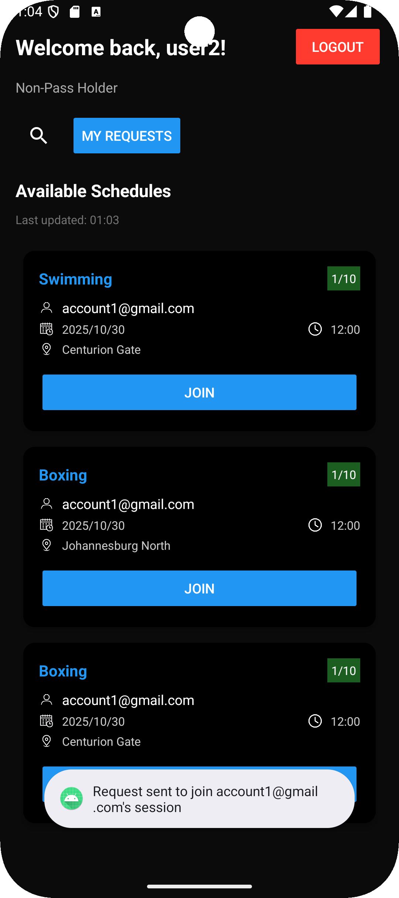
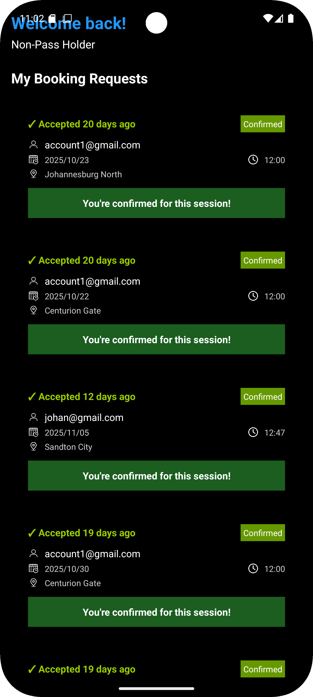

01 — Authentication
Users can register for an account or log in to access the application's features.


Connecting gym members through buddy passes, shared gym sessions, and a request-and-approval workflow.

The Gym Buddy application landing screen.
Gym Buddy is a mobile application designed to help gym members connect through guest and buddy passes. It allows members to create gym sessions, discover available sessions, and manage requests to join.
The application supports two user roles: PassHolders, who create and manage sessions, and Non-PassHolders, who browse sessions and request to join them.
Within a six-member team, I primarily contributed to the backend functionality and application logic. My work included Firebase Firestore integration, user data management, session management, and the request-and-approval workflow between users.
This experience strengthened my understanding of how application components interact with stored data and how user actions are translated into application workflows.
An overview of the main screens and user workflows.
Users can register for an account or log in to access the application's features.


PassHolders can create gym sessions, manage their schedules, and make sessions available for other users to request to join.



Non-PassHolders can explore available gym sessions, request to join a session, and check the status of their requests.


The project involved mobile application development, backend application logic, cloud database integration, user data management, and workflow implementation.
Building Gym Buddy gave me practical experience contributing to a collaborative software project and implementing workflows involving users, stored data, and approval processes. It also strengthened my understanding of how backend functionality supports the user experience.